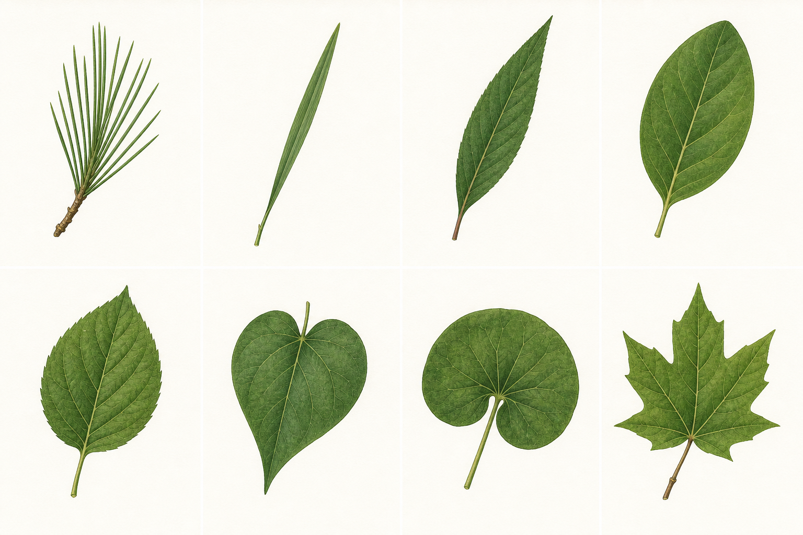

01 · OUTLINE
葉形：先看整體輪廓
- 針形細長如針，常見於部分裸子植物。
- 線形兩側近乎平行，例如許多禾草。
- 披針形中段較寬、兩端漸尖。
- 橢圓形中段最寬，兩端較圓順。
- 卵形靠近葉基處較寬。
- 心形葉基凹入，像心形。
- 腎形寬圓、葉基深凹。
- 掌狀裂裂片像手掌向外伸。
LEAF MORPHOLOGY
把葉子拆成五個問題：輪廓像什麼？邊緣怎麼走？葉脈怎麼分？葉子長在莖的哪裡？這是一片單葉，還是一整片複葉？

01 · OUTLINE
02 · MARGIN
03 · VENATION
逆光觀察能看清細脈，但不要折葉；優先使用地面完整落葉。
04 · ARRANGEMENT
05 · SIMPLE OR COMPOUND
一個葉柄連著一片完整葉片；即使楓香、羊蹄甲的葉片有裂，仍是單葉。腋芽位在整片葉的葉柄基部。
多枚小葉沿葉軸排列，例如月橘、鳳凰木。小葉基部通常沒有腋芽，整片複葉的基部才有。
多枚小葉從同一點放射，例如鵝掌藤、木棉。不要把每枚小葉誤認成一片完整葉。